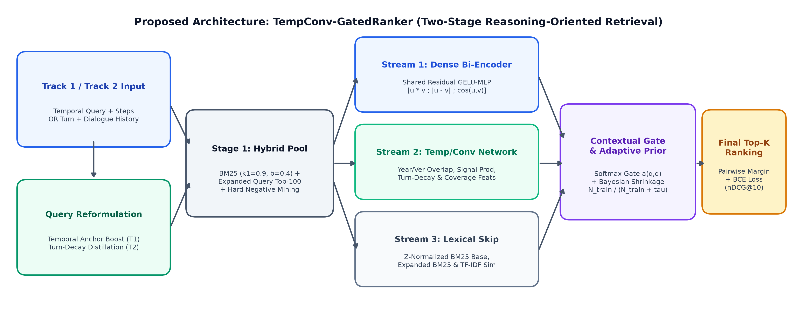
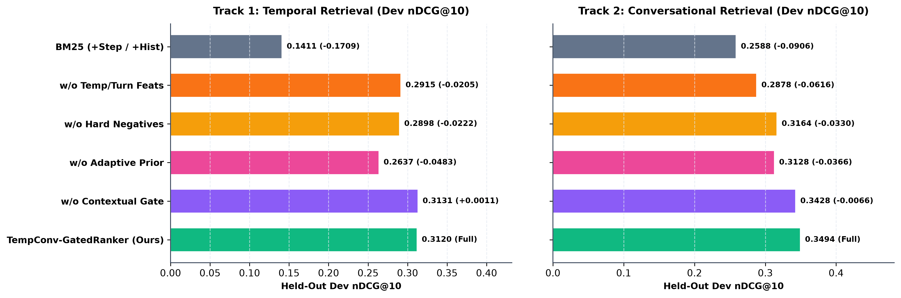
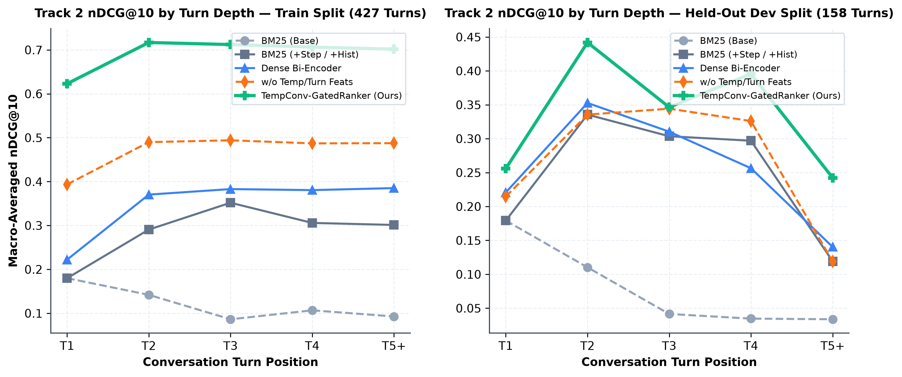
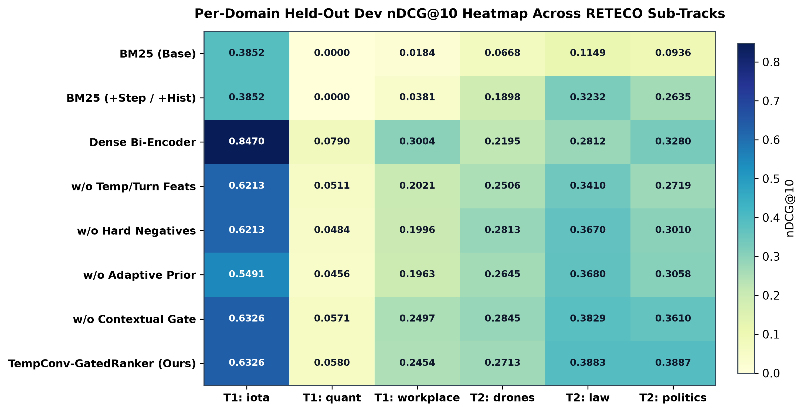

Standard lexical (BM25) and single-vector dense retrievers assume relevance is purely topical. In RETECO (SemEval-2027 Task 1), retrieval requires reasoning over two critical dimensions:
[u⊙v ; |u−v| ; cos(u,v)].
| Track | Domain | Passages | Train Qs | Dev Qs |
|---|---|---|---|---|
| T1: TEMPO | iota (Blockchain) | 9,680 | 7 | 3 |
| T1: TEMPO | quant (Quant Finance) | 25,040 | 24 | 10 |
| T1: TEMPO | workplace (Applied) | 43,584 | 25 | 11 |
| T2: RECOR | drones (Engineering) | 16,381 | 104 | 38 |
| T2: RECOR | law (Legal QA) | 20,027 | 164 | 66 |
| T2: RECOR | politics (Social Sci) | 16,712 | 159 | 54 |
| Total (6 Official Domains) | 131,544 | 483 | 182 | |

| Model / Ablation Variant | T1 Dev nDCG@10 | T1 TC@10 | T1 NDCG|FC | T2 Dev nDCG@10 | T2 MRR@10 | T2 R@10 |
|---|---|---|---|---|---|---|
| 1. Official BM25 (Base Query) | 0.1345 | 0.2037 | 0.1975 | 0.0918 | 0.0812 | 0.1693 |
| 2. Official BM25 (+Step / +Hist) | 0.1411 | 0.2284 | 0.2083 | 0.2588 | 0.2746 | 0.3705 |
| 3. Dense Bi-Encoder (SVD-64D) | 0.4088 | 0.4912 | 0.7474 | 0.2762 | 0.2847 | 0.4194 |
| 4. Ablation: w/o Adaptive Prior | 0.2637 | 0.4788 | 0.4705 | 0.3128 | 0.3287 | 0.4522 |
| 5. Ablation: w/o Hard Negatives | 0.2898 | 0.4727 | 0.4834 | 0.3164 | 0.3364 | 0.4621 |
| 6. Ablation: w/o Temp/Turn Feats | 0.2915 | 0.4727 | 0.4823 | 0.2878 | 0.2790 | 0.4499 |
| 7. Ablation: w/o Contextual Gate | 0.3131 | 0.4912 | 0.5624 | 0.3428 | 0.3644 | 0.4785 |
| 8. TempConv-GatedRanker (Ours) | 0.3120 (+132%) | 0.4912 (+141%) | 0.5592 (+183%) | 0.3494 (+35%) | 0.3854 (+40%) | 0.4735 (+28%) |



politics T5+ nDCG@10 from 0.1452 to 0.3931).iota, 24 in quant, 25 in workplace). Unregularized neural reranking achieves the highest Track 1 Train nDCG@10 (0.2862 vs. 0.2370) but overfits on tiny dev sets.
quant, temporal shifts are expressed via domain events ("LIBOR to SOFR transition") rather than explicit 4-digit years, favoring latent SVD co-occurrence over explicit year-match weights.